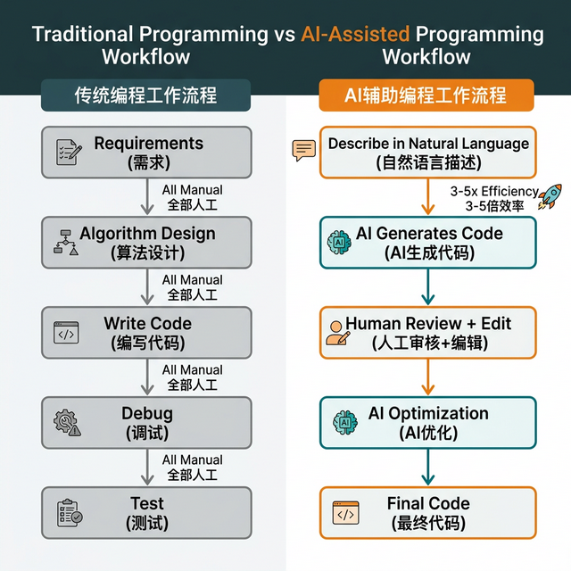
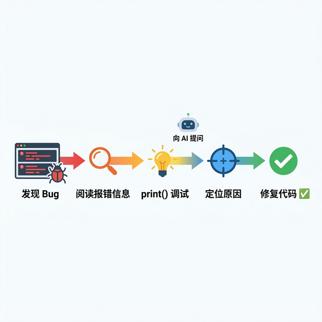

先理解流程，再写 Prompt
这张流程对比图提醒学生：AI 并没有取消“需求澄清、人工审核、调试与优化”这些关键步骤，只是把输入方式和效率改变了。
Workflow在使用 Lingma 或 ChatGPT 写代码时，必须防范 AI 幻觉（Jiashe Effect）。掌握结构化 Prompt，让 AI 输出带有错误捕获与日志记录的“工业级”学术代码。

这张流程对比图提醒学生：AI 并没有取消“需求澄清、人工审核、调试与优化”这些关键步骤，只是把输入方式和效率改变了。
Workflow
先读错误信息，再定位原因，再让 AI 协助修改。这个顺序本身就是提示词质量的重要部分。
Debug Loop左边是检查、修改、验证的闭环，右边是直接复制、无法解释、被幻觉牵着走。两者差别必须让学生看见。
Do / Don't初学者往往给出非常含糊的指令，这会导致 AI 输出一段**缺乏容错机制**的代码。如果在爬取网页时网络断开了一次，整段代码就会崩溃白跑。
不要把 AI 当作“黑盒”。学术诚信的红线是：**你必须确切知道程序的执行流程。**采用 CoT（Chain of Thought 思维链）交互。